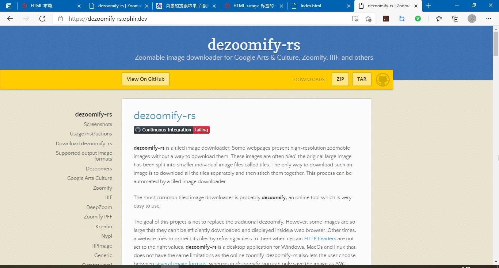
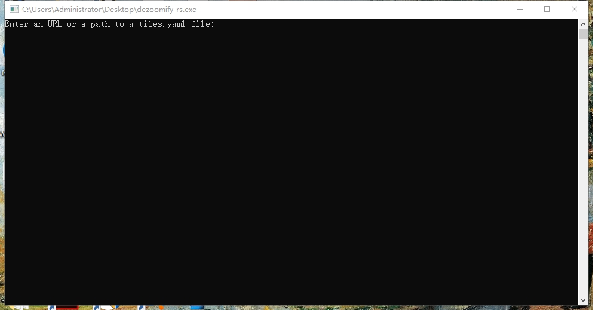
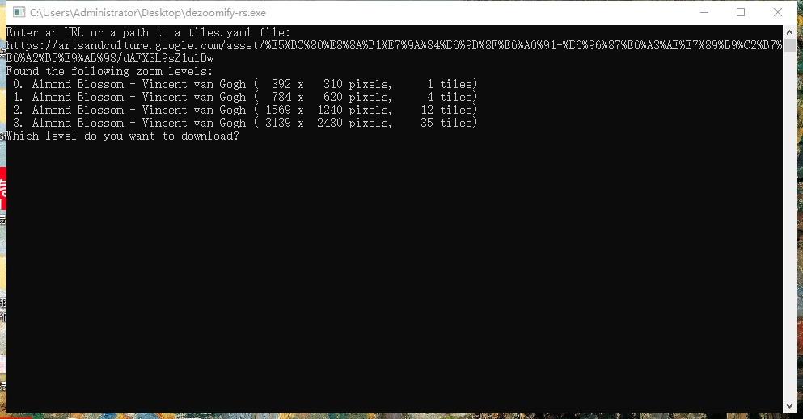
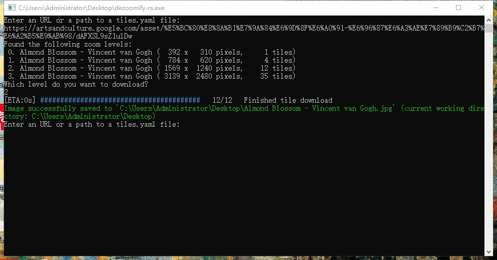

Dezoomify是一个抓取任意网页上图片的软件，轻量而好用，我们用它来抓取Google Arts & Culture上的画作
首先，下载Dezoomify
其链接是点我
点击"DOWNLOADS"后方的ZIP
解压缩安装完毕后，双击“dezoomify-rs.exe”启动
你会看到这样的页面，黑黢黢的有点丑

不要害怕！不要当颜狗，管他难看好看，好用就是好软件！
在其中键入你喜欢画作的网址，我们以文森特·梵高的开花的杏树为例，把其网址https://artsandculture.google.com/asset/%E5%BC%80%E8%8A%B1%E7%9A%84%E6%9D%8F%E6%A0%91-%E6%96%87%E6%A3%AE%E7%89%B9%C2%B7%E6%A2%B5%E9%AB%98/dAFXSL9sZ1ulDw粘贴在其中，按下回车键
如图所示：

键入你需要的尺寸序号
待进度条完成后，即可在所示路径找到画作